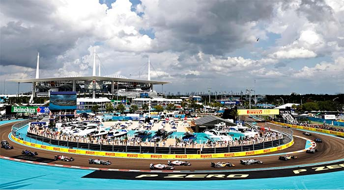
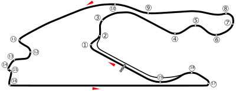

NAVEGUE
Home
Pilotos
Calendário/Tabela
Grand Prix
Construtoras
Últimas Notícias
GP de Miami
SOBRE
A pista de Miami é um circuito de corrida de rua que está programado para sediar o Grande Prêmio de Miami de Fórmula 1 a partir de 2022. A pista terá 5,41 km de extensão e contará com 19 curvas, incluindo uma reta principal de 1,7 km de comprimento. A pista foi projetada para proporcionar uma corrida emocionante para os pilotos e para os fãs, com várias oportunidades de ultrapassagem e uma combinação de curvas de alta e baixa velocidade.
Circuitos Utilizados
Miami

INFORMAÇÕES DA CORRIDA

Localização
Miami Gardens, Estados Unidos
Voltas
57
Percurso
5.412 km
Total
308.326 km
Curvas
19
Pole
Sergio Perez
Anos Disputados
2
Última Disputa
2023
Maior vencedor
Max Verstappen
Última Corrida - Pódio
Max Verstappen